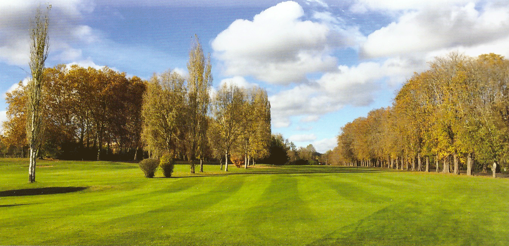

Golf de Périgueux
Débutants, curieux, amateurs ou joueurs confirmés : le Golf de Périgueux est ouvert à toutes et à tous.
Le golf
Propriété de la ville, le Golf public de Périgueux s'étend sur 44 ha à 10 minutes du centre historique et touristique.

- 18 trous, par 72, 6028m et un Pitch & Putt 9 trous, par 27
- Un practice avec 24 postes dont 13 couverts.
- Une zone d'approches et de sorties de bunkers.
- Une zone de wedging, un putting green sur une surface de 1500m2 et, bientôt, une chipping zone.
- Voiturettes, chariots manuels ou électriques et séries de clubs sont disponibles à la location.
- Un boutique (clubs neufs ou d'occasion, balles, chariots et vêtements et chaussures adaptés).

Le restaurant « Au 19 » est ouvert tous les jours à midi, en salle ou en terrasse au bord du dernier trou du parcours, et le soir sur réservation. Ouvert à tous, c'est un premier pas vers la découverte du Golf de Périgueux !
Le club
- Fort de 650 licenciés, le club est géré par une association loi 1901, il a conclu un partenariat avec la société BLUE GREEN.
- L'enseignement est assuré par 2 professeurs diplômés, Edwin THOMANN et Pierre-Alexandre TROUBETZKOY et un élève-professeur qui dispensent cours individuels, cours collectifs et qui ont en charge l'école de golf ainsi que le suivi et l'entraînement des équipes.
- Le club est labellisé « Valides-Handicapés » depuis 2013, il permet accessibilité, initiation et suivi appropriés aux personnes atteintes d'un handicap non moteur pour une pratique sportive partagée.
L'école

Gage de son excellente qualité, l'école de Golf de Périgueux est titulaire du « Label Sportif Ecole de Golf » décerné par la F.F.G.
Elle accueille, en période scolaire, le mercredi et le samedi 65 jeunes de 5 à 16 ans. Certains d'entre eux intègrent les équipes qui disputent les compétitions interdépartementales de la Ligue Nouvelle Aquitaine ainsi que les rencontres organisées sous l'égide du Comité Départemental de Golf de la Dordogne.
Cette école fonctionne avec le concours des professeurs et d'un élève-professeur mais également avec des bénévoles qui encadrent enfants sur le parcours.
Pendant les vacances, des stages de découverte ou de perfectionnement sont proposés à tous les jeunes.
Elle accueille, en période scolaire, le mercredi et le samedi 65 jeunes de 5 à 16 ans. Certains d'entre eux intègrent les équipes qui disputent les compétitions interdépartementales de la Ligue Nouvelle Aquitaine ainsi que les rencontres organisées sous l'égide du Comité Départemental de Golf de la Dordogne.
Cette école fonctionne avec le concours des professeurs et d'un élève-professeur mais également avec des bénévoles qui encadrent enfants sur le parcours.
Pendant les vacances, des stages de découverte ou de perfectionnement sont proposés à tous les jeunes.
Vous débutez :
D'abord, le premier dimanche de chaque mois, vous pouvez découvrir gratuitement le golf, un peu, et les installations du Golf de Périgueux.
Un professeur vous encadrera et répondra à toutes vos interrogations.
Renseignements et inscription à l'accueil.
Si vous êtes tenté de franchir le pas, vous pourrez opter pour une formule initiation sur 4 mois avec des cours à volonté ou pour des formules découvertes sur un ou deux ans qui vous donneront le temps de la réflexion avant de plonger vers un engagement définitif.
Sachez que nous faisons tout pour que le Golf de Périgueux soit un golf pour TOUS et un golf OUVERT à TOUS. Nous vous attendons.
D'abord, le premier dimanche de chaque mois, vous pouvez découvrir gratuitement le golf, un peu, et les installations du Golf de Périgueux.
Un professeur vous encadrera et répondra à toutes vos interrogations.
Renseignements et inscription à l'accueil.
Si vous êtes tenté de franchir le pas, vous pourrez opter pour une formule initiation sur 4 mois avec des cours à volonté ou pour des formules découvertes sur un ou deux ans qui vous donneront le temps de la réflexion avant de plonger vers un engagement définitif.
Sachez que nous faisons tout pour que le Golf de Périgueux soit un golf pour TOUS et un golf OUVERT à TOUS. Nous vous attendons.
Les tarifs
Green-fee
| 9 trous | 18 trous | |
|---|---|---|
| Basse saison (novembre à février) |
21 € | 35 € |
| Moyenne saison (mars, avril, mai, octobre) |
25 € | 42 € |
| Haute saison (juin à septembre) |
29 € | 46 € |
Abonnements
| Abonnements annuels | Tarifs |
|---|---|
| Débutant 1ère année | 260 € |
| Débutant 2ème année | 440 € |
| Jeune (moins de 18 ans) | 120 € |
| Etudiant (moins de 26 ans) | 180 € |
| Formule Initiation (Tarif mensuel tout compris) | 75 € |
| Formule « Carte Verte » | 199 € |
| Ecole de Golf 1ère année | 130 € |
| Ecole de Golf années suivantes | 170 € |